EasyBalance：分布式 MoE 推理的跨层负载均衡
《EasyBalance: Cross-Layer Load Balancing in Distributed MoE Inference》由 Yize Wu、Ke Gao、Ling Li、Yanjun Wu 完成，一作主机构是中国科学院软件研究所智能软件研究中心，合作机构包括中国科学院大学，发表于 ICML 2026。论文入口为 arXiv:2608.07964，作者已公开 EasyInfra 代码仓库。这项工作不训练新路由器，也不复制或搬迁专家，而是重新安排多个微批次在不同 MoE 层之间的执行节拍，让原本分别偏向不同设备的工作量在同一步互相填平。
推理时的专家路由仍会把工作量集中到少数设备；同步式专家计算让其余设备等待最重设备，而依赖复制或迁移的既有方案又难以在任务快速变化时兼顾适应性、内存与通信成本。
1. 背景和问题
MoE 的计算优势来自稀疏激活：每个 token 只进入少量专家，而不是经过整个稠密前馈网络。模型规模因此可以大幅增加，单 token 计算量却不按总参数量同比增长。进入分布式部署后，专家通常按 expert parallelism（EP）切到多张 GPU。路由器先为 token 选择 top-k 专家；若专家不在本卡，系统通过一次 all-to-all 把隐藏状态发送到专家所在设备，完成专家计算后再通过第二次 all-to-all 把结果送回原设备，并按路由权重聚合。通信和聚合有同步边界：一张卡上的专家收到更多 token，就会成为这一 MoE step 的尾部，轻载卡即使提前完成也只能等待。
训练时常见的 load-balancing auxiliary loss 只能鼓励统计意义上的路由均匀，不能保证推理请求在每一层、每一个微批次都均匀。实际输入来自问答、检索、摘要、代码等不同任务，token 表示不同，router 的选择也会改变。更麻烦的是，系统时延取决于“每一步最重设备”，而不是整个请求结束后各设备 token 总数是否大致相同。于是平均分布看似可接受，瞬时热点仍能制造大量 GPU idle time；模型越大、EP 规模越高，每张卡共置的专家越少，设备内部用其他专家吸收热点的机会也越少。
既有推理侧负载均衡主要改变 expert-device mapping。专家复制为热点专家建立额外副本，使 token 能分流到多个 rank，但副本常驻显存，模型继续扩张时成本会越来越明显；专家迁移把热专家搬到轻载设备，避免永久副本，却引入权重传输、同步和映射更新。两类方案通常都依赖历史路由统计。一份为任务 A 优化的映射遇到任务 B 时可能不再合适，甚至把 B 的热点集中得更严重。若在线服务不断混入新任务，重新统计、复制或迁移的响应速度就会落后于分布变化。
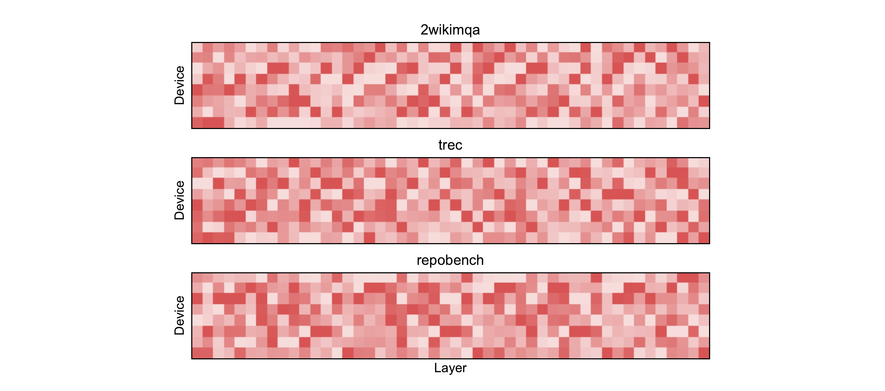
Figure 7 把 Qwen3-30B 在 2wikimqa、trec 与 repobench 三个任务上的工作量画成逐层热力图，横轴是层，纵轴是 EP=8 的设备，颜色越浅表示工作量越低。三张图不是同一热点模板的轻微扰动：同一层在不同任务中可能由不同设备变成深色，热点沿层方向的持续方式也不同。这正是固定映射的适应性难题——映射优化只能利用过去观察到的共现关系，而请求类型切换会立刻改变它要优化的对象。图中仍能看到每个任务内部的明显深浅差，因此问题并非“总量不够”，而是每一步同步边界下的设备分布不均。EasyBalance 选择不追赶这种任务分布，而只读取当前 step 已经产生的路由工作量，因此它的适应时间是一次在线调度，而不是一轮模型重映射。
论文的研究问题可以压缩成两层：第一，能否在完全不修改 expert-device mapping 的前提下获得新的均衡自由度；第二，这种自由度能否以足够低的开销进入真实推理关键路径。作者发现答案藏在“层”与“微批次”两个维度里。单个序列必须逐层前进，但多个微批次彼此没有数据依赖；当它们分别停在不同 MoE 层时，其他层已经驻留显存的专家就形成一种无需复制的天然冗余。需要调度的不是专家位置，而是哪些微批次的 MoE 工作量在同一步执行。评价这条路线时也要区分两个目标：它要减少的是专家计算同步造成的空洞，不是重新训练 router 让 token 更均匀，更不是让 all-to-all 网络自动消除拥塞。只要这个目标边界清楚，后面的工作量不等式、调度开销和端到端实验才能组成可检验的证据链，也能避免把局部利用率改善误写成整个服务栈的普遍加速。
2. 方法
2.1 从 token 路由到设备尾部：工作量如何形成
设第 $l$ 层 attention 后的隐藏状态为 $h'_l$，router 给出 top-k 专家集合 $I_l$ 及对应权重 $W_{l,i}$。MoE 输出是被选专家结果的加权和。这条式子也界定了数值等价性的底线：任何调度都不能更换专家集合、权重或聚合次序，只能移动整段计算在微批之间的相对时刻：
符号解释：$I_l$ 是 token 在第 $l$ 层激活的专家索引集合，$W_{l,i}$ 是专家 $i$ 的门控权重，$\operatorname{expert}_i$ 是对应前馈网络。EP 不改变这条数学定义，但把求和项分散到不同设备，因此在得到加权和前必须完成 dispatch、专家计算与 combine。EasyBalance 也不改变 $I_l$、$W_{l,i}$ 或专家输出；它只改变多个微批的这些计算何时共同进入一次调度步，所以数值结果与原模型一致。
把第 $l$ 层在 $D$ 张设备上的 token 工作量写成 $w^{(l)}=(w_1^{(l)},\ldots,w_D^{(l)})$。同步执行时，作者把有效工作量定义为最重设备的工作量。它不是简单求总 token 数，而是专门捕捉所有 rank 必须等到最慢一张卡完成的 barrier 语义：
符号解释：$w_d^{(l)}$ 是设备 $d$ 在该层承担的专家 token 数，$\hat{w}^{(l)}$ 是决定这一 MoE 计算步完成时间的尾部。这个定义抓住了 EasyBalance 直接优化的部分：若八张卡分别承担 10、9、8、7、6、5、4、3 个单位，实际执行时间仍按 10 个单位计算，空出的容量不能自动转移给热点卡。它不是完整的系统时延模型，因为 all-to-all 拥塞、kernel launch 和 attention 也会影响真实时间；但在相同硬件与输入规模下，它能隔离 expert compute imbalance。
把所有 MoE 层的实际工作与同步等待容量累加后，作者得到全模型 GPU 利用率。这个归一化量把不同模型层数和 EP 规模放到同一口径，并直接对应实验里报告的 under-utilization：
符号解释：分子是真正完成的专家工作总量，分母把每层尾部时间乘以设备数，表示同步等待下可用的总容量；$l_{\max}$ 是 MoE 层数。实验报告的 GPU under-utilization 是 $1-u$，越低越好。这个指标比单看端到端时延更接近方法目标，因为 attention 时间不会被 EasyBalance 改变，端到端收益会被不变部分稀释。
2.2 跨层专家冗余与工作量组合
EasyBalance 的第一层洞察是改变“冗余”的观察范围。传统专家复制只在同一层制造多个相同专家，而模型本来就把其他层的专家权重放在 GPU 内存中。它们不能处理当前层的 token，却能处理另一个已经推进到相应层的微批。只要每个微批内部仍按 $l\rightarrow l+1$ 前进，不同微批之间就可以处在不同层，并在同一调度步分别启动各自的专家 kernel。所谓跨层联合，不是让第 10 层专家代替第 9 层专家，而是把“微批 A 的第 9 层”和“微批 B 的第 10 层”同时作为一个 RunSet 来安排。
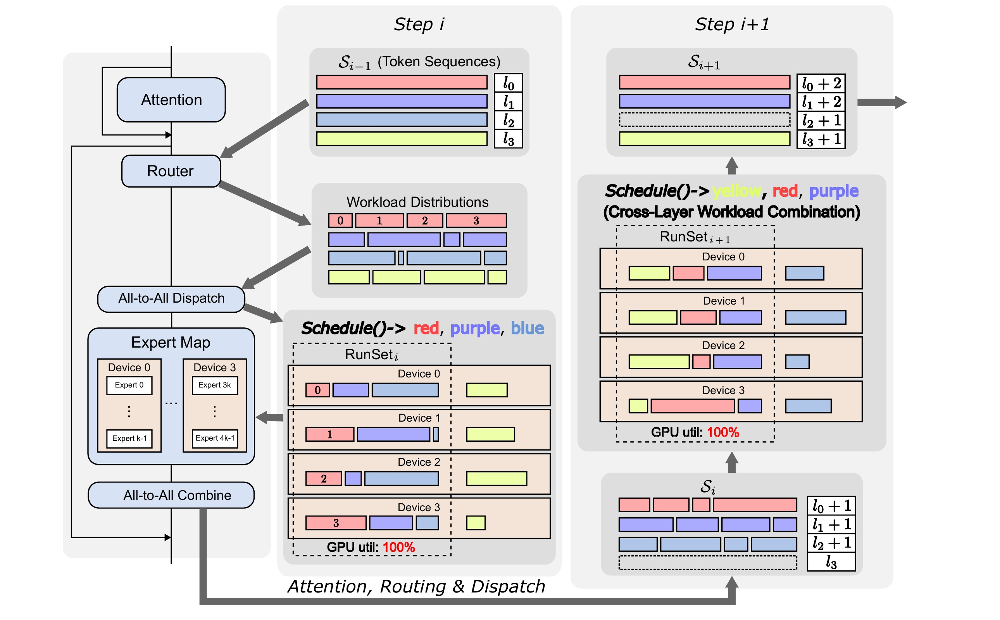
Figure 1 从左到右展示完整数据流。左侧单个微批仍执行 Attention、Router、All-to-All Dispatch、Expert Map、All-to-All Combine，模型内部顺序没有被改写。中间的 step $i$ 中，四种颜色代表四个微批，它们当前层 $l_j$ 不同，router 已经给出每个微批在四张设备上的工作量。调度器选择红、紫、蓝进入 $\mathrm{RunSet}_i$，黄色暂缓；三种负载在不同设备的峰值互补，联合后四张设备都被填满。完成后，被选微批各推进一层并先做下一层 attention、routing 与 dispatch；到 step $i+1$，调度器又选择黄色、红色、紫色，蓝色等待。延期只发生在微批之间，单个微批的层序和输出完全不变。 这张图也揭示实现边界：serving engine 必须能同时维护多个微批的层位置、路由元数据和未执行工作，且能在一个调度步发起来自不同层的专家 kernel。
对微批 $j$ 的设备工作量向量记作 $w_j$。分别执行时，有效工作量之和是 $\sum_j\max_d(w_{j,d})$；联合执行时，各设备负载相加，有效工作量为 $\max_d(\sum_j w_{j,d})$。比较的对象始终是同一组已路由 token，只改变它们是否同一步执行，因此二者满足：
符号解释：$j$ 枚举进入同一 RunSet 的微批，$d$ 枚举设备。左边是联合执行后的峰值，右边是逐微批执行时每次峰值之和。该不等式来自“和的最大值不超过最大值之和”，说明在作者以有效工作量近似 expert compute 时延的模型中，组合不会增加这部分工作量。它不是对完整端到端系统的无条件保证：若组合导致 kernel 过小、attention/communication overlap 被破坏或调度开销上升，实际时延仍可能退化，因此作者后面引入最小执行阈值 $m$。只有所有工作量都在同一设备取峰值时，等号才容易出现；这把“能否改善”的判据从抽象均匀性收缩为峰值设备是否重合：
符号解释：$\operatorname*{argmax}$ 返回工作量最大的设备；若不同微批或不同层的热点设备不同，某个向量的低谷就能吸收另一个向量的峰值，联合式通常变成严格小于。设备数增加时，多个独立热点恰好持续落在同一设备的概率也会下降，这给跨层组合提供了规模上的直觉优势。
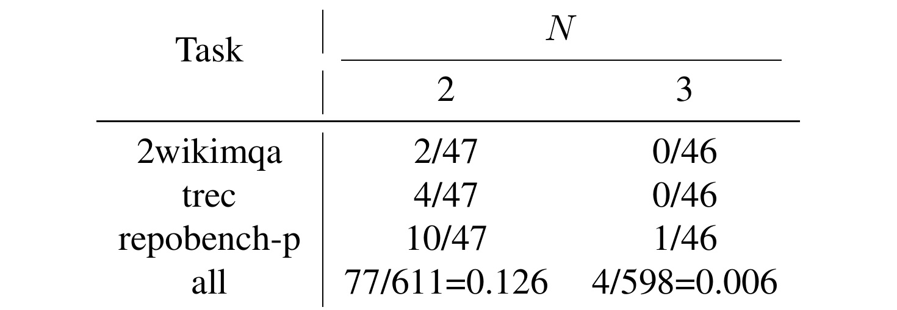
Table 2 用 Qwen3-30B 的 48 个 MoE 层、32 个 batch、4K 序列验证上述前提。对 13 个 LongBench 任务汇总，连续两层峰值设备完全相同只有 $77/611=0.126$，连续三层只有 $4/598=0.006$；在单项任务里，2wikimqa 与 trec 的三连续层计数都是 $0/46$，repobench-p 也只有 $1/46$。这不等于路由在层间独立，也不证明任意组合都能获得相同幅度的收益，但它说明“连续层总在同一卡过热”并非常态。EasyBalance 正是把这种层间峰值错位转化为运行时机会。表中两层统计仍有约 12.6% 取相同热点，意味着调度器不能盲目打包所有微批；它必须观察当前工作量，再决定组合或延期。
2.3 RunSet 贪心调度、延期与最小执行阈值
算法维护每个微批 $T_j$ 的当前层 $l_j$、未完成集合 $S_i$ 与本步执行集合 $\mathrm{RunSet}_i$。初始化时所有微批在第 0 层。每一轮先让上一步已执行的微批完成 attention、routing 和 dispatch，得到下一层真实路由工作量；调度器再从 $S_{i-1}$ 中选择新的 RunSet，执行 MoE compute 与 combine，并把其中每个微批的 $l_j$ 加一。到达最后一层的微批从集合删除，未选中的微批保留当前层，等待后续出现更互补的工作量。未来层路由在当前时刻未知，因此策略必须是在线贪心，而不是离线求全局最优路径。
调度不能无限等待“完美互补”。若 RunSet 太小，专家 kernel 的计算强度下降，微批原本提供的计算—通信重叠也会失效。作者要求 $|\mathrm{RunSet}|\ge m$；若剩余集合 $|S|<m$，则直接执行所有可用工作。实验建议 $m$ 取微批数量的 $0.5\sim0.75$。这个阈值把两种风险放到同一控制量里：小 $m$ 允许更积极延期以寻找峰值互补，但可能形成小 kernel；大 $m$ 保持吞吐，却可能强迫热点相同的微批一起执行。
训练与推理的差异非常明确。训练阶段不增加 loss、不更新 router、不改变专家参数，也无需为 EasyBalance 重新训练模型。 推理阶段才读取路由产生的小型工作量元数据，并更新 RunSet。对单个微批而言，attention→routing→dispatch→expert compute→combine 的依赖完全保留；不同微批只是交错推进。因此它与专家复制、迁移或静态 EPLB 映射正交，也能在新任务到来时马上使用当前路由，而不等待历史统计收敛。
2.4 MaxUtil、CumUtil 与 DiffPeak 的决策差异
MaxUtil 枚举候选微批子集并选择组合后利用率最高者，通常效果最好，但随微批数 $n$ 呈 $O(2^n)$。作者给出两个 $O(n)$ 近似。CumUtil 按顺序扫描候选微批，只有加入新工作量能提高当前组合利用率时才接纳；它仍读取整个设备向量，因此比只比较峰值设备保留更多负载形状信息：
符号解释：$S_{i,j}$ 是 step $i$ 扫描到候选 $j$ 时已经选中的工作量集合，$U(\cdot)$ 计算组合后的设备利用率。它利用完整向量判断新微批是否填平低谷，比只看峰值更细，但扫描顺序可能让早期选择阻塞更好的后续组合。DiffPeak 更直接，只允许热点设备尚未在已选集合出现的候选加入；它把每个工作量压缩为一个 argmax 设备，省掉利用率重算，却也丢失峰值幅度和次高负载：
符号解释：候选 $w_{i,j+1}$ 的峰值设备必须不同于所有已选工作量的峰值设备。该规则把 Table 2 的观察直接编码成热点去重，计算最轻，却忽略第二高设备和负载幅度；两个向量峰值不同也可能在另一张卡上同时很重。EasyBalance 的贡献因而不应等同于某个特定启发式，而是“跨层可组合的调度空间”；不同 scheduler 只是效果与开销之间的实现选择。
3. 实验结果
3.1 实验设置与主结果
实验覆盖 Qwen3-30B-A3B-Instruct-2507、Moonlight-16B-A3B-Instruct、Qwen3-235B-A22B-Instruct-2507 三个 MoE 模型，任务来自 LongBench，包含阅读理解、问答、检索、摘要与代码等 13 类输入。硬件是一台 8×A800-SXM4 80GB、NVLink 互联的节点，默认 EP=8。较小两模型每 GPU 使用 $16\times4K$ 的 batch/sequence 配置，Qwen3-235B 使用 $12\times512$；默认拆成 4 个微批，$m=3$。结果对 8 次运行取平均。端到端时延反映用户可见性能，effective workload 与 $1-u$ 则隔离专家失衡。
微批处理本身是前置条件。Table 1 显示在 2wikimqa、EP=8、batch 128、序列 4K 下，仅把 batch 拆成 4 个微批，Qwen3-30B 的时延就从 10.15 秒降到 8.60 秒，Moonlight-16B 从 5.06 秒降到 4.40 秒，原因是通信与其他微批计算可以重叠。EasyBalance 的对照是在已有微批 pipeline 上继续改变 MoE RunSet，而不是把这部分常规收益算作自身贡献。
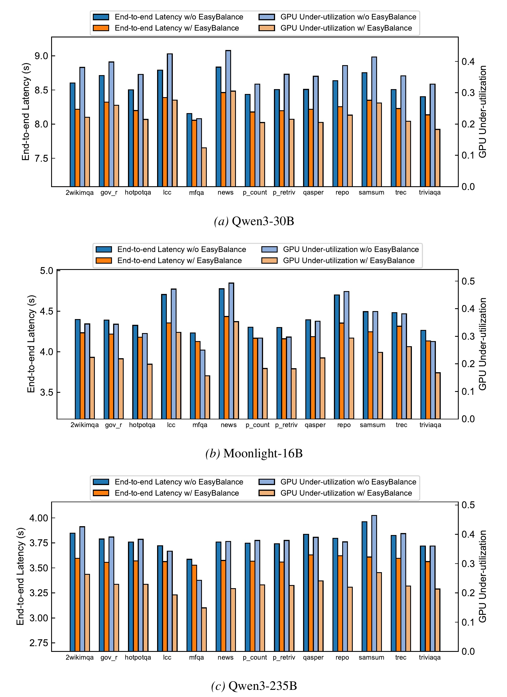
Figure 2 的三组柱状图分别对应 Qwen3-30B、Moonlight-16B 和 Qwen3-235B，每个任务同时画出使用/不使用 EasyBalance 的端到端时延与 GPU 未利用率。橙色时延柱在十三项任务上普遍低于蓝色，浅橙未利用率也普遍低于浅蓝，说明收益不局限于某种文本任务或某个模型规模。论文概括多数配置的 GPU idle/under-utilization 降幅超过 40%，例如主文描述典型值从不低于约 0.35 降到约 0.2。图的证据强项是方向一致性，而不是单一峰值加速；由于 y 轴从 attention 时间附近开始，视觉柱差被放大，不能把柱高比例直接当作端到端加速比。作者在附录明确分解 $t_{e2e}=t_{expert}+t_{attention}$：EasyBalance 只降低 $t_{expert}$，同 batch 与序列长度下 $t_{attention}$ 近似不变，因此完整系统收益小于专家阶段的利用率改善。
符号解释：$t_{expert}$ 是专家计算及其失衡等待，$t_{attention}$ 是相同设置下不受任务路由偏斜影响的 attention 部分。该式解释了为何论文同时报告时延和未利用率，也提醒工程评估要看 expert compute 在服务总时延中的占比；若 attention 或 all-to-all 已经主导，进一步填平专家负载的端到端空间会受限。
3.2 调度算法：收益是否依赖昂贵搜索
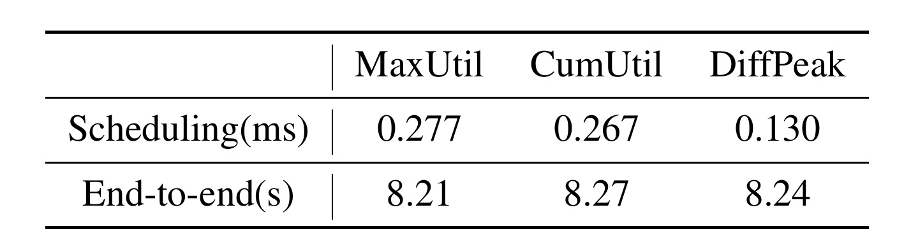
Table 3 在 Qwen3-30B、2wikimqa、batch 128、4K、4 微批下测量在线成本。MaxUtil、CumUtil、DiffPeak 每 step 调度分别是 0.277、0.267、0.130 ms，对应端到端时延 8.21、8.27、8.24 s。三者都把亚毫秒调度放在 8 秒级请求中，直接支持“元数据决策开销很小”。DiffPeak 最便宜但端到端并非最优；MaxUtil 比它多约 0.147 ms/step，最终仅快约 0.03 秒。这里的选择取决于微批数：4 个微批时枚举尚可，若 serving 为了更多组合机会提高 $n$，$O(2^n)$ 会迅速变成风险，线性策略的稳定延迟更重要。表中差距还说明，调度器应按吞吐规模选择，而不是把 MaxUtil 固化为唯一实现。
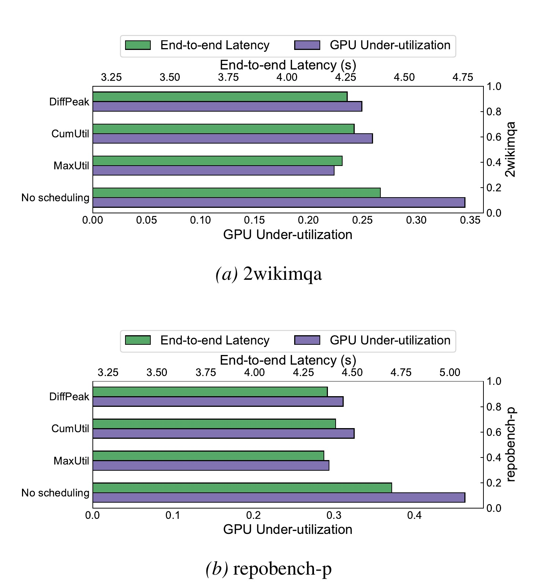
Figure 3 在 2wikimqa 与 repobench-p 上把三种策略与 no scheduling 对照。横向绿色条表示端到端时延，紫色条表示 GPU 未利用率；三种 EasyBalance scheduler 都明显优于不调度，MaxUtil 多数情况下最好，但 CumUtil 和 DiffPeak 也保留了主要收益。这个结果把贡献从具体算法中剥离出来：真正有效的是让跨层工作量共同进入 RunSet，启发式只决定能接近多好的组合。附录 Figure 8 在更多模型和任务上重复检查，MaxUtil 有时反而不如另两种策略，但所有策略仍能降低两项指标。这也说明工作量向量具有任务差异，单一规则没有全局最优保证，线上系统可以根据微批规模和 latency budget 切换实现。
3.3 微批与并行规模消融
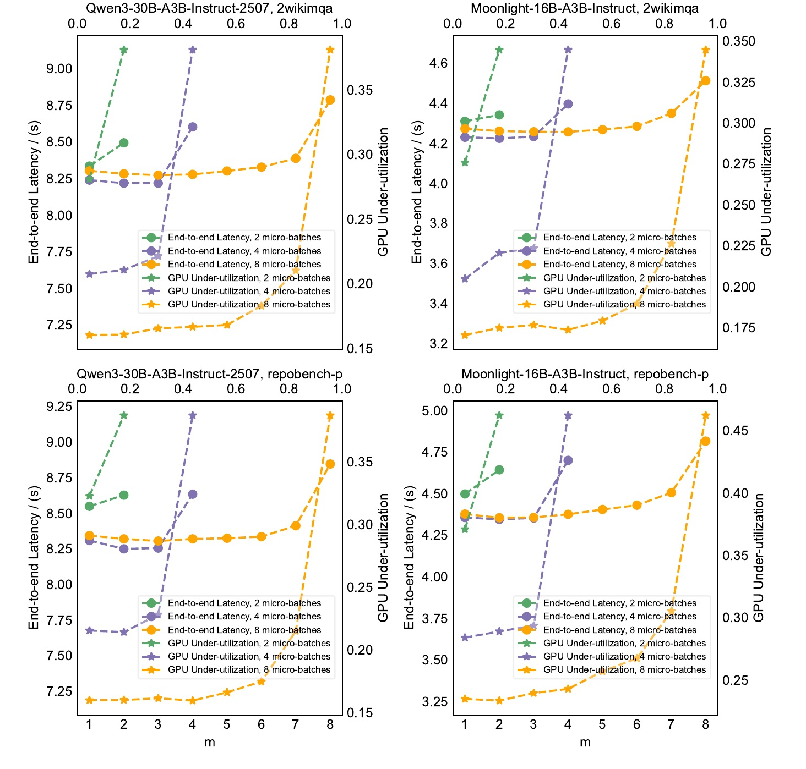
Figure 4 同时改变微批数量 2/4/8 和最小执行阈值 $m$。绿色、紫色、橙色分别对应 2、4、8 个微批，圆点看端到端时延，星号看 GPU 未利用率。两个任务、两个模型呈现一致的折中：2 个微批可供匹配的向量太少，均衡机会不足；8 个微批虽然常得到最低未利用率，却因单个微批太小、计算强度下降而可能让端到端时延变差；4 个微批在论文环境中给出最佳端到端表现。随 $m$ 增大，调度器被迫一次执行更多工作，延期自由度下降，尤其接近微批总数时指标明显恶化。因此作者建议 $m$ 取微批数的 0.5–0.75 倍。这个建议不是通用常数，换 GPU、kernel 和通信栈后应重扫，因为它同时受组合空间和 kernel 效率控制。复现时还应记录请求尾部剩余微批数，避免平均值掩盖尾段退化。
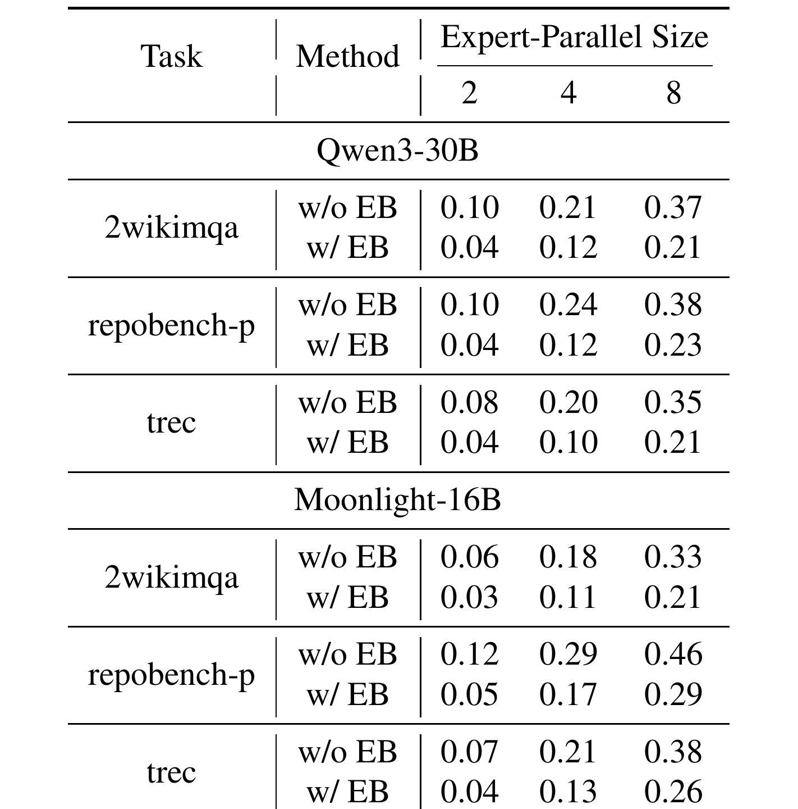
Table 4 把 EP 从 2 扩到 4、8，并按 32、64、128 等比例调全局 batch 以保持单设备容量口径。Qwen3-30B 的 2wikimqa 在 EP=2/4/8 时，未利用率从 0.10/0.21/0.37 降至 0.04/0.12/0.21；repobench-p 从 0.10/0.24/0.38 降至 0.04/0.12/0.23。Moonlight-16B 的 repobench-p 从 0.12/0.29/0.46 降至 0.05/0.17/0.29。基线随着 EP 变大明显恶化，因为每卡共置专家减少，设备内部不同专家的负载难以互相吸收；EasyBalance 在三个规模都降低未利用率，且 EP=8 仍保留可观绝对降幅。这是可扩展性主张的重要证据，不过实验上限只有单机 8 卡，尚不能外推到跨节点网络。
3.4 与 EPLB 的正交性及机制证据
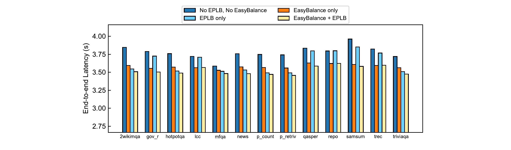
Figure 5 在 Qwen3-235B 的 13 个 LongBench 任务上比较四种状态：无 EPLB/无 EasyBalance、仅 EPLB、仅 EasyBalance、EPLB+EasyBalance。EPLB 的 expert placement 用全部 13 项任务历史路由生成。几乎所有任务中，橙色“仅 EasyBalance”都比深蓝基线低；浅黄组合又常低于浅蓝“仅 EPLB”，说明当前 step 的跨层调度仍能利用映射优化之后剩余的瞬时失衡。不同任务上 EPLB 的收益波动较大，与 Figure 7 的任务依赖性相呼应；EasyBalance 不需要映射针对当前任务正确，因此表现更稳定。组合收益不是证明两者完全无交互，而是说明它们作用于不同自由度：EPLB 改 token 到设备的静态/慢速布局，EasyBalance 改多个已路由工作量的快速执行组合。
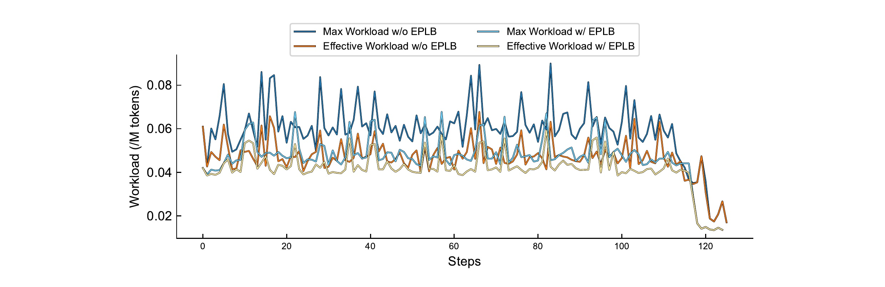
Figure 6 进一步追踪 multi_news 单次运行约 120 个 scheduling step。蓝系曲线表示逐微批最大工作量之和，橙/黄色表示联合后的有效工作量；带 EPLB 与不带 EPLB 各有一组。多数 step 中有效工作量曲线低于对应最大工作量曲线，正是 $\max(\sum_j w_j)<\sum_j\max(w_j)$ 的实测表现。EPLB 把整体曲线向下移动，但联合后仍可继续下降，解释了 Figure 5 的叠加收益。末段所有曲线同步下降，可能对应部分微批已经完成、剩余 token/工作量减少；此时组合候选也变少。曲线说明“峰值错位抵消”确实发生，却没有单独拆解 all-to-all 时间，因此只能证明 expert workload 机制，不能宣称通信拥塞也被解决。
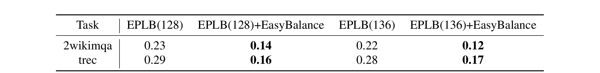
Table 5 比较 EPLB 使用 128 个逻辑/物理专家与额外复制到 136 个物理专家。2wikimqa 中，单纯增加 8 个副本只把未利用率从 0.23 降到 0.22；叠加 EasyBalance 后，128 专家为 0.14，136 专家为 0.12。trec 中复制仅从 0.29 到 0.28，而叠加后分别为 0.16、0.17；后者甚至没有随副本增加继续改善。这个两任务结果支持两点：少量复制的边际收益可能不足以覆盖显存成本，跨层调度则无需新增权重内存；两者可以组合，但副本数量并非越多越好。样本只有两项任务，不能由此否定更完善的复制策略，也不能把“essentially no additional overhead”理解为零成本——EasyBalance 仍需要元数据、调度状态和多个微批驻留资源。
整体实验链条相对完整：Figure 2 给跨模型/任务主结果，Table 3 与 Figure 3 分离调度成本和启发式依赖，Figure 4 与 Table 4 检查配置和规模，Figure 5/6 与 Table 5 验证正交性及机制。缺少的是跨节点、多硬件、生产流量和端到端通信剖析；论文证明的是单机 A800 环境中 expert compute imbalance 可被稳定缓解，还不是所有分布式 MoE 服务条件下的普适加速保证。
4. 总结
EasyBalance 最有价值的地方，是把负载均衡从“专家放在哪里”改写成“哪些已经路由的工作量现在一起执行”。跨层专家没有功能上的可替代性，但多个无依赖微批可以停在不同层，因而模型现有权重就构成无需复制的执行选择。作者用最大值不等式说明联合工作量在简化的 expert compute 模型下不劣，用连续层热点统计说明严格改善机会常见，再用 RunSet 贪心调度把机会转成系统实现。核心贡献不是某个调度启发式，而是开放跨层、跨微批的组合空间，同时保持每个微批内部层序和模型输出不变。
对工程实践而言，它尤其适合任务分布频繁变化、无法不断重做 expert mapping、且已有 micro-batching 的在线 MoE 服务。接入时应先测 expert compute 在端到端中的占比，再确认 engine 能表达不同微批的层位置和 RunSet，最后联合搜索微批数、$m$ 与 scheduler。若服务主要受 attention 或网络 all-to-all 限制，即使 GPU expert idle 显著下降，用户时延改善也可能很小。
4.1 局限与风险
- 适用范围受限。 方法只作用于分布式 MoE 的 expert-parallel 场景；稠密模型、无 EP 部署或 expert compute 占比很低的服务没有直接收益。
- 依赖微批自由度。 当前实现要求 micro-batching。小 batch、低并发、强顺序约束或请求尾部只剩少量微批时，可组合空间不足；把单序列切片到不同层仍未验证。
- 系统模型不完整。 不等式约束的是设备 token 工作量，不包含 all-to-all 拥塞、kernel launch、cache 行为和 attention。跨层 kernel 并发是否扰动通信 overlap，需要更细剖析。
- 硬件外推有限。 实验只使用单机 8×A800-SXM4 80GB 与 NVLink，跨节点网络、其他 GPU、不同 collective 实现和 serving engine 的收益未验证。
- 调度与内存仍有成本。 MaxUtil 随微批数指数增长；多微批在不同层驻留需要状态、激活和 KV 资源。若显存压力迫使频繁换入换出，“不复制专家”的优势可能被其他内存成本抵消。
- 路由质量不在目标内。 EasyBalance 接受 router 已产生的选择，不改善专家专业化、token 质量或辅助损失，也不直接修复热点背后的模型行为。
4.2 后续跟进与复现重点
- 复现四层指标。 同时记录每 step 的 $\hat w$、GPU under-utilization、expert kernel 时间与端到端时延，确认利用率改善确实穿透到用户指标，而不是被 attention/通信掩盖。
- 重扫微批数与 $m$。 在目标硬件上至少比较 2/4/8 微批及 $m/n=0.5,0.75,1.0$，并观察尾部阶段；论文最优 4 微批是 A800 环境结论，不能直接写入生产常量。
- 与现有 EPLB 联合评估。 分别测试任务内稳定流量、任务快速切换和混合流量，比较静态映射、复制、迁移、EasyBalance 及其组合，重点看重新适应时间和显存代价。
- 扩展到跨节点。 在 IB/RoCE 环境分离 expert compute 与 all-to-all 时间，检查跨层联合是否改变 collective 并发、拥塞和 tail latency；这是从单机论文走向大规模 serving 的关键证据。
- 验证数值与服务语义。 对调度前后逐 token 输出做一致性测试，并覆盖动态 batch 加入/退出、取消请求、异常微批和最后若干层，确保延期只改变时序，不改变结果或公平性。
我的判断是，这篇论文提供了一个简洁、可与既有映射方法叠加的运行时视角，证据足以支持“在作者环境里稳定降低 expert imbalance”，但“几乎零额外开销”和“最坏情况安全”都应限定在其元数据调度与工作量模型内。真正决定落地价值的，不是公式是否成立，而是目标服务是否拥有足够微批并行度，以及专家计算是否仍是总时延中的主要瓶颈。